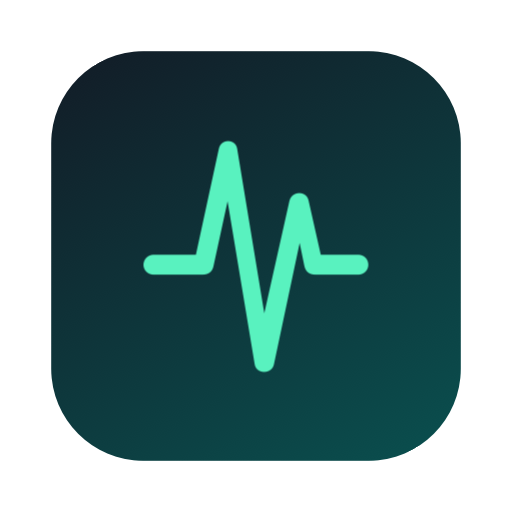
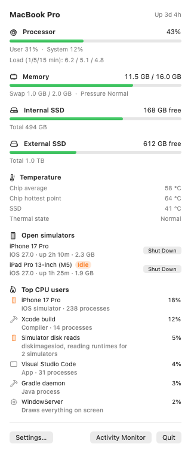

NabızA free menu bar monitor for CPU, memory, disk and temperature, built for developers. It names what is using your Mac: the simulator you forgot, the Gradle daemon, the build.
Free · macOS 14 or later · Apple Silicon and Intel

Activity Monitor lists hundreds of processes with names like amsengagementd. Nabız groups them by what you actually started.
The 200+ processes inside an iOS simulator count under the device you know, along with the disk image reads that feed it.
Left one booted after a test run? After 30 quiet minutes you get a notification with a Shut Down button.
Code Helper, WebKit and virtual machine processes are counted under the app that started them.
Xcode builds, Gradle and Kotlin daemons, Maestro, and Android emulators with their AVD names.
mds_stores, WindowServer, kernel_task and friends get a one-line explanation.
Chip and SSD sensors, read directly. No helper tool, no admin password.
Signed and notarized by Apple. Open the disk image and drag Nabız to Applications.
Download NabızUpdates itself after that, or with brew upgrade.
brew install --cask alicinaroglu/tap/nabizRelease notes · No analytics. The only network request is the update check, which you can turn off in Settings.